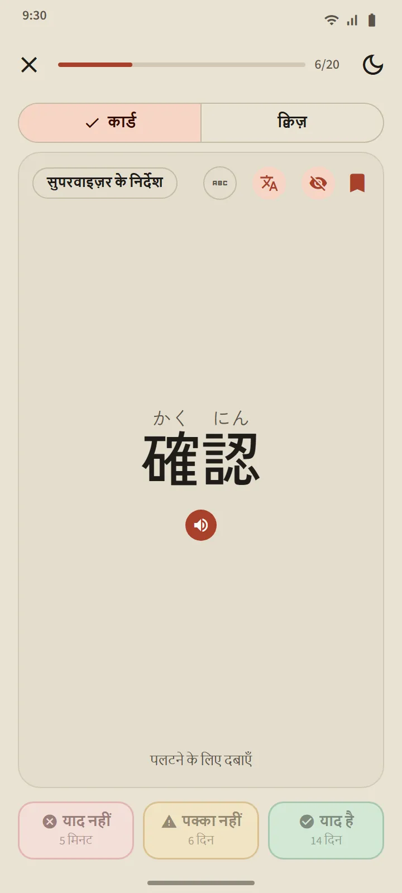
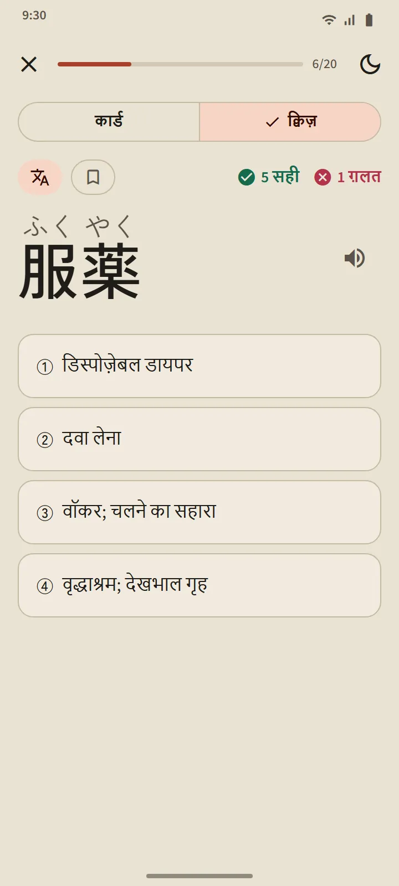
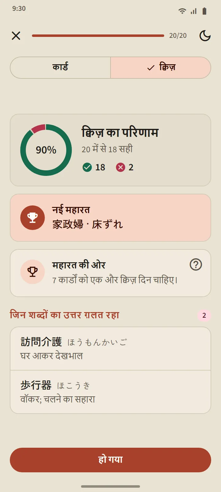
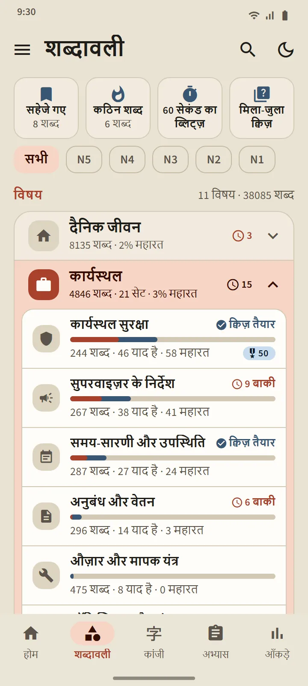
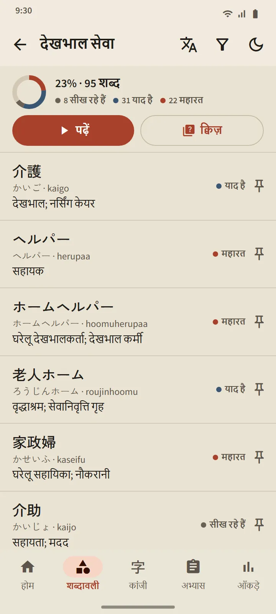
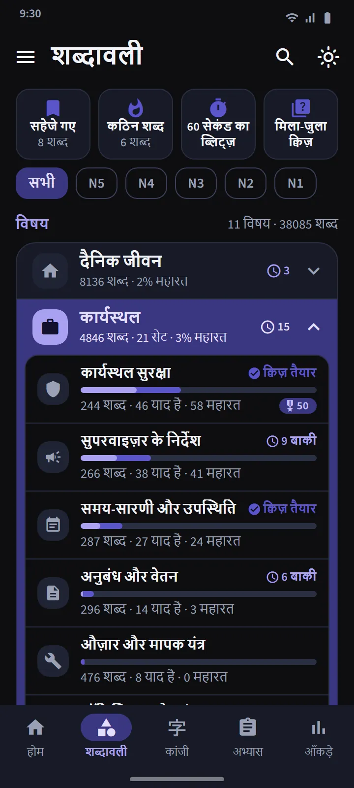
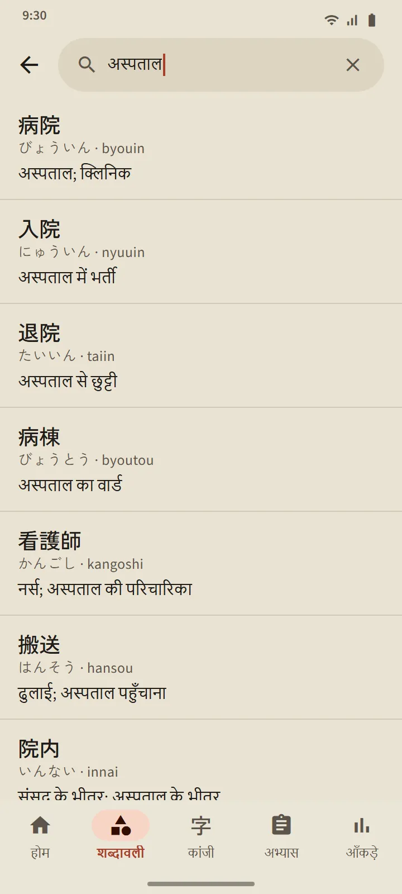
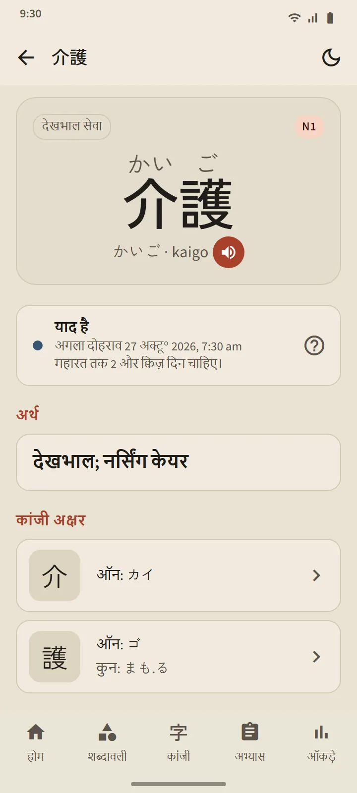

ऐसे कार्ड जो जानते हैं कि आप कब भूलने वाले हैं
कार्ड के आगे के हिस्से में शब्द दिखता है (चाहें तो फ़ुरिगाना के साथ)। पलटने के लिए टैप करें: पठन, रोमाजी, अर्थ और शब्द में शामिल कांजी, साथ में उच्चारण का बटन। फिर तीन बटनों में से एक से ख़ुद को आँकें।
शेड्यूलिंग FSRS करता है, वही अंतराल पर दोहराव वाला एल्गोरिद्म जो आधुनिक फ्लैशकार्ड ऐप इस्तेमाल करते हैं। हर बटन पर लिखा रहता है कि शब्द कब लौटेगा: कुछ मिनट, दिन या हफ़्तों बाद। आप जितनी बार याद है चुनेंगे, अंतराल उतना लंबा होता जाएगा।
- याद नहीं शब्द को किसी भी चरण से वापस सीख रहे हैं में भेज देता है।
- पक्का नहीं उसका अंतराल छोटा कर देता है।
- याद है शब्द को याद है चरण में ले जाता है और अगला दोहराव और आगे खिसका देता है।

चार चरण, और महारत साबित करनी होगी
हर शब्द चार चरण चढ़ता है: नया, सीख रहे हैं, याद है, महारत। कार्ड पर याद है दबाने से शब्द केवल याद है चरण तक पहुँचता है। महारत पाने के लिए आपको उसका क्विज़ में तीन अलग-अलग दिन सही जवाब देना होगा। महारत वाले शब्द समय आने पर परखे जाते रहते हैं, और ग़लत होने पर पीछे लौट जाते हैं।
किसी सेट का क्विज़ तब खुलता है जब उसके 20 शब्द याद है या महारत में हों (छोटे सेट तब खुल जाते हैं जब उनके सारे शब्द याद हों)। प्रश्न दोनों तरफ़ से आते हैं: शब्द से अर्थ, और अर्थ से शब्द। अंत में आपको नए महारत वाले शब्द, बस एक क़दम दूर वाले शब्द, और जो ग़लत हुए वे शब्द दिखते हैं।


विषय के अनुसार पढ़ें, हर शब्द पर नज़र रखें
शब्दावली टैब 11 समूहों में बँटा है, और हर समूह में छोटे सेट हैं। ऊपर का फ़िल्टर सब कुछ एक JLPT स्तर तक सीमित कर देता है। हर सेट की अपनी स्क्रीन है: पूरा हुआ प्रतिशत दिखाता रिंग, हर शब्द की स्थिति के साथ शब्द सूची, सीख रहे हैं/याद है/महारत का फ़िल्टर, और पढ़ें व क्विज़ बटन।
कार्यस्थल समूह में जापान में काम करने जाने वाले उम्मीदवारों के लिए 21 सेट हैं: कार्यस्थल सुरक्षा, सुपरवाइज़र के निर्देश, समय-सारणी और उपस्थिति, अनुबंध और वेतन, औज़ार और मापक यंत्र, लॉजिस्टिक्स और भंडारण, दफ़्तर और दस्तावेज़, खाद्य प्रसंस्करण, देखभाल सेवा, कारख़ाना और उत्पादन, औद्योगिक मशीनें, इलेक्ट्रॉनिक्स और बिजली, निर्माण कार्य, रेस्तरां और रसोई, कृषि, जहाज़ निर्माण, इमारत की सफ़ाई, मत्स्य पालन, ऑटोमोबाइल और मरम्मत, विमानन और हवाई अड्डा, आतिथ्य सेवा। जापान में जीवन के लिए परिवहन, ख़रीदारी और पैसे, घर और फ़र्नीचर के सेट हैं, साथ ही समाज और प्रशासन और शरीर और स्वास्थ्य समूह।
| समूह | सेट |
|---|---|
| दैनिक जीवन | 16 |
| कार्यस्थल | 21 |
| समाज और प्रशासन | 8 |
| शरीर और स्वास्थ्य | 8 |
| स्वभाव और भावनाएँ | 8 |
| शब्द भेद | 5 |
| तकनीक और मीडिया | 4 |
| प्रकृति और विज्ञान | 10 |
| अकादमिक विषय और राय | 8 |
| संस्कृति और धर्म | 4 |
| खेल और गेम | 3 |


विशेष सेट और तेज़ अभ्यास
समूहों की सूची के ऊपर तीन सेट हैं जो हर सेट से शब्द उठाते हैं: सहेजे गए (जिन शब्दों पर आपने तारा लगाया), कठिन शब्द (कार्ड पर बार-बार भूले या क्विज़ में चूके शब्दों से अपने-आप भरता है), और 60 सेकंड का ब्लिट्ज़ (एक मिनट में जितने कार्ड समा सकें)। चौथा खाना, मिला-जुला क्विज़, सभी सेट के याद है और महारत वाले शब्दों को एक साथ परखता है।

38,085 शब्दों का जेब में शब्दकोश
ऊपर की पट्टी में खोज का आइकन कांजी, काना, रोमाजी या अर्थ से कोई भी शब्द ढूँढ देता है। नतीजे मेल की गुणवत्ता के क्रम में आते हैं, और रोमाजी को वर्तनी की ढील के साथ मिलाया जाता है: shinbun और shimbun, koohii और kōhī, arigato और arigatou, सब एक ही शब्द ढूँढते हैं। हर शब्द का विवरण पेज है: उसका चरण और अगला दोहराव, अर्थ, पठन सहित उसमें शामिल कांजी, और उच्चारण का बटन।


स्तर और अर्थ की भाषाएँ
शब्दों के स्तर एक अनुमान हैं: जापान फ़ाउंडेशन शब्दावली की कोई आधिकारिक सूची प्रकाशित नहीं करता, इसलिए यह मिलान पुरानी JLPT सूचियों और उपयोग की आवृत्ति से बनाया गया है। "JFT" नाम का कोई अलग शब्द स्तर नहीं है: JFT-Basic में वही बुनियादी शब्दावली परखी जाती है जो N5 और N4 में है, साथ में कार्यस्थल के शब्द।
अर्थ 11 भाषाओं में पूरे हैं। खमेर और चीनी में हर मुफ़्त शब्द शामिल है; जिनका अनुवाद अभी नहीं हुआ वे अंग्रेज़ी में दिखते हैं। अनुवाद की भाषा सेटिंग में इंटरफ़ेस की भाषा से अलग चुनी जा सकती है।
| स्तर | शब्द | मुफ़्त |
|---|---|---|
| N5 | 1,030 | 1,007 |
| N4 | 2,044 | 1,503 |
| N3 | 11,230 | 4,097 |
| N2 | 11,309 | 2,290 |
| N1 | 12,472 | 503 |